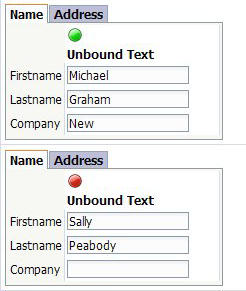

Unbound controls (these are in the Layout Controls section)
There are a number of 'unbound' controls available in the Layout Controls section.
-
Static image (can be conditional based on data in the grid. Can also be based on comparisons with summary values)
-
Static text
|  |
|
Image based on a value in the grid and unbound text |